ЮСС — логотип и обложки
Векторные файлы (SVG) масштабируются без потери качества: хоть на визитку, хоть на борт машины.
Только буквы
logo-uss.svg — на светлом, logo-uss-white.svg — на тёмном фоне и фото
Со знаком (ромб как в фавиконке сайта)

logo-uss-mark.svg / logo-uss-mark-white.svg — основной вариант для шапок и документов
Квадрат для аватарок (2ГИС, Яндекс, мессенджеры)
Справа — как это выглядит мелко в списке организаций. Всё внутри круга: не обрежется круглой аватаркой.
Обложка для 2ГИС

2gis-cover-16x9.jpg — 1920×1080, основной вариант
2gis-cover-1x1.jpg — 1200×1200, квадрат

2gis-cover-clean.jpg — то же без надписей, если модерация придерётся к тексту на фото